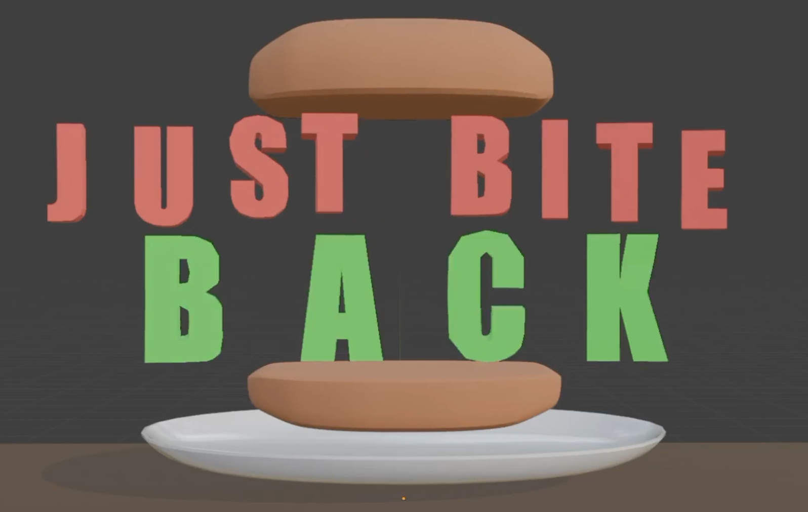

Just Bite Back (2025)

Just Bite Back was a project that I worked as part of my high school senior year
game production course during the second semester, although my team had been slightly planning our game
during the first semester of the school year. The premise of the game was a PvP FPS game in which you first
cook various foods in your customizable food truck, then use that food to fight other players, with
different effects depending on the kind of food and the quality it was cooked at.
Due to the small team size (3 people) and the small amount of time we had in class, we were only able to
prototype the outline of the FPS part of the game. I was the sole programmer for this prototype, in which I
was able to implement a multiplayer system using Unity Lobby and Relay. If I had the opportunity to work on
any project with no limitations and a full team, I would definitely want to flesh out this game more.
- Studio:
- CapyCo Studios
- Team Size:
- 3 (myself, Evan Kreg, and Felix McElwaine)
- Platforms:
- PC
- Project Length:
- Semester long project during senior year of high school
- Engine / Tools:
- Unity, GitHub
- Languages:
- C#
- Packages:
- Unity Netcode for Game Objects, Unity Relay, Unity Lobby